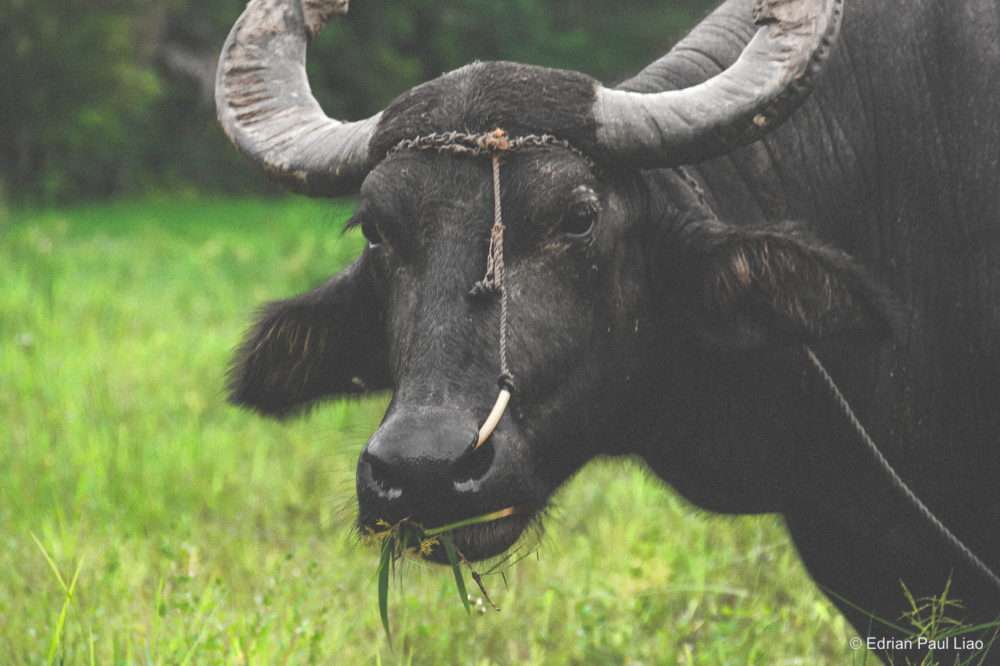

Agricultural damages
42.51% of the Philippines’ lands is used for agriculture (World Bank). In Cauayan and the rest of the country, the income source of most families including mine is agriculture. It helps that the Cagayan River, the longest river in the Philippines,
provides free water resources to all farmers.
Every morning at 6 am, these farmers begin their work for two primary reasons. First, it allows them to avoid the scorching midday sun, which can be harmful. Second, it provides an opportunity to address lingering crop pests from the previous night.
This morning when I interviewed the farmers, they just learned that some of their the crops had fallen and are now cleaning them up.
Some of the roads leading up to their respective fields are narrow and bumpy, so as a means of transportation, farmers in our local community use either a makeshift vehicle we call kuliglig.
or a carabao, a water buffalo specie mostly found in the Philippines.

Because of the weather’s extremity and unpredictability, all the farmers I interviewed have had reduced profits from crops (mostly rice and corn) being completely submerged in water and fallen due to floods and strong winds, respectively.
This is showed using Sentinel-2 satellite images: the rise of water in Cagayan River was observed from a typhoon last Nov. 13, 2020 which I witnessed firsthand.
On the same day that I interviewed these farmers, I was flying my drone to capture videos of the Cagayan River when suddenly a farmer approached me. Seeing me with the drone, he asked if I could get a picture of his corn fields across the river.
We then saw these:
Some patches left bald by the gusty winds of Super Typhoon Egay.
Then, the farmer asked me out of nowhere if I could relay this to the local government for some help. He was worried because his profits might not be enough to sustain his family until the next cropping season. Not knowing what to say, I assured that the photos
will be sent to the local authorities.
What happened that day is one of the thousands of days farmers in my local community experience. I wished that our resilience as Filipinos can be transmitted to the crops they plant to sustain a living for them and their family.
I then learned that
Super Typhoon Egay caused 123.6 M USD worth of damages to the northern part of the Philippines. In just a matter of days, that's how much we've lost. This is not shocking news especially to our authorities. Last 2020, there were a total of 280M USD worth of
agricultural damages in the entirety of the Philippines. These losses have greatly affected the national budget causing reallocation of funds, but this solution made one sector in the Philippines suffer.
Continue: Education